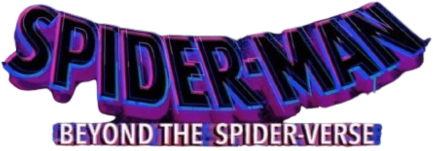

- Ano: 2027
- Diretor: Bob Persichetti
Sinopse: Enquanto Gwen Stacy vem se consolidando cada vez mais como líder da recém-formada Gangue-Aranha, o Homem-Aranha do Brooklyn está correndo perigo por estar preso na dimensão natal da aranha que o picou, junto a sua versão alternativa. Com Miguel O’Hara planejando toda a destruição de Miles, seus amigos estão determinados a vencer a corrida contra a Sociedade-Aranha e salvar o garoto do multiverso, que vem sendo atacado por Spot por conta de ataques de longo alcance na dimensão dele. O filme encerra a trilogia do Aranhaverso.